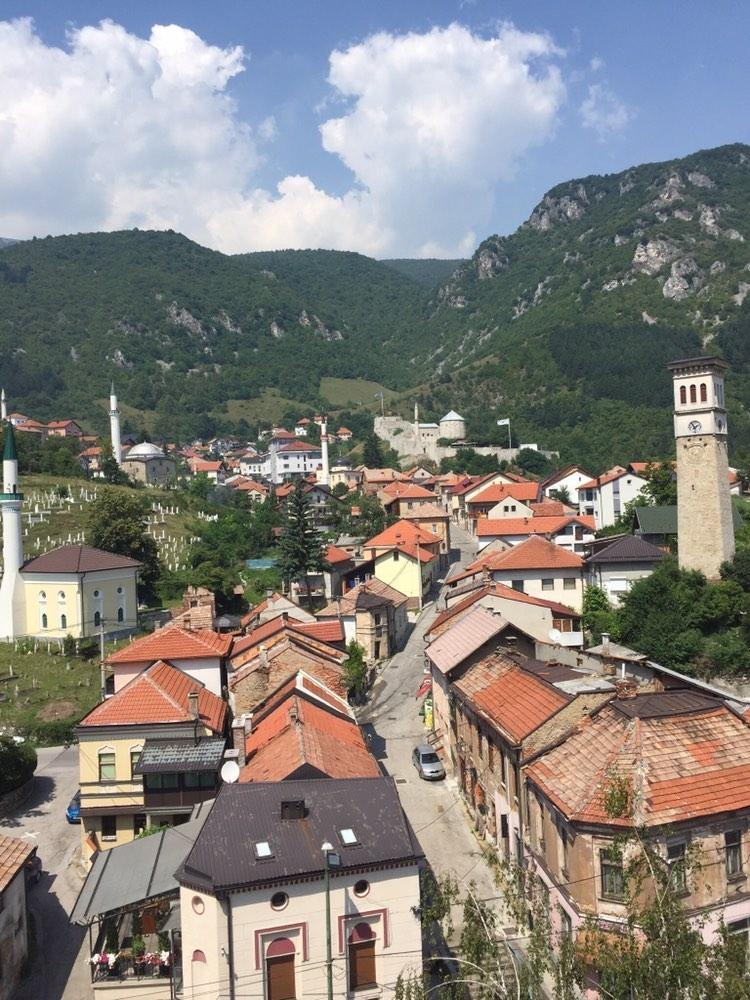
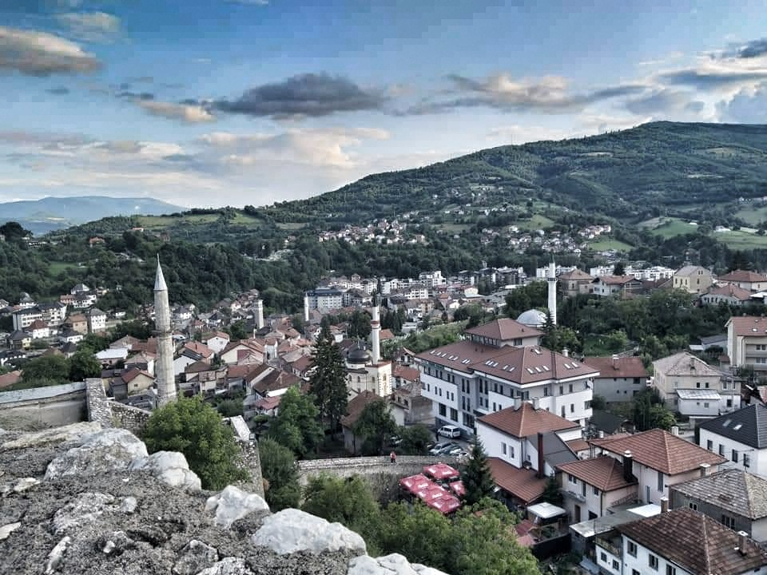

|

|

|
|
"No one ever thought in Travnik that this town
was created for ordinary life and everyday events ...
Their city, in fact, is a narrow and deep fissure
that generations have built and cultivated over time,
a fortified passage where people have stayed to live constantly,
adapting himself and him to him through the centuries. "
Travnik Chronicle, Ivo Andric.